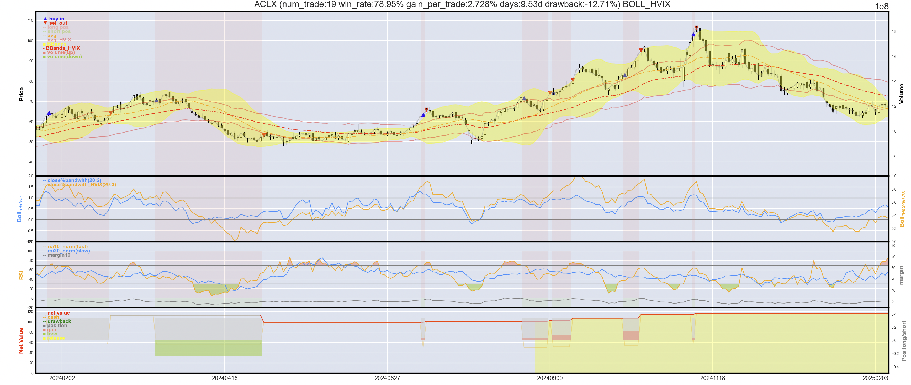
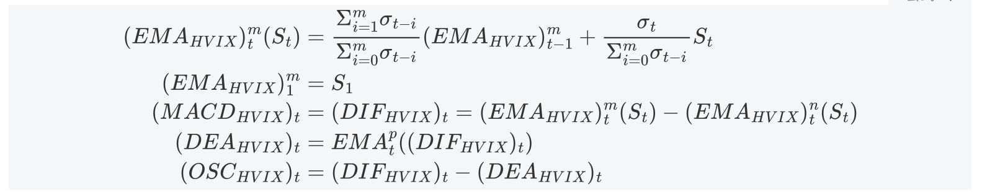
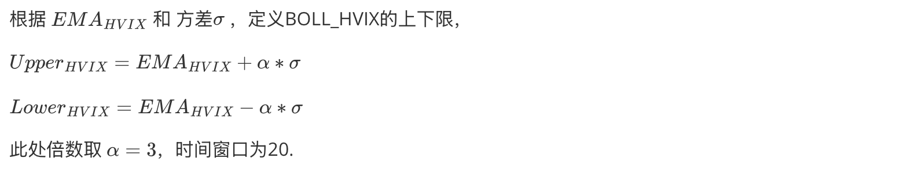

我们尝试捕捉趋势股，希望找到投资机会。趋势股的特点如下图，我们发现当一个交易形成时，我们利用传统的BOLL bands（黄色带）和新生成的BOLL_HVIX bands（红色实线），组合我们的推荐策略。当黄色带上沿持续高于红色实线时，标志这一段长期趋势的形成。

上述指标中出现HVIX，是根据历史价格波动率加权的指数移动均值，
Exponetial Moving Average weighted by historical volatility[^1]
"MACD evolved from the exponential moving average (EMA), which was proposed by Gerald Appel in the 1970s. It is a common indicator in stock analysis. The standard MACD is the 12-day EMA subtracted by the 26-day EMA, which is also called the DIF. The MACD histogram, which was developed by T. Aspray in 1986, measures the signed distance between the MACD and its signal line calculated using the 9-day EMA of the MACD, which is called the DEA. Similar to the MACD, the MACD histogram is an oscillator that fluctuates above and below the zero line. The construction formula is as follows:
wherem = 12,n = 26,andp = 9.Theweightnumber 𝛼 is a fixed value equal to 2/(m + 1). The number of the MACD histogram is usually called the MACD bar or OSC. The analysis process of the cross and deviation strategy of DIF and DEA includes the following three steps.
(i) Calculate the values of DIF and DEA.
(ii) When DIF and DEA are positive, the MACD line cuts the signal line in the uptrend, and the divergence is positive, there is a buy signal confirmation.
(iii) When DIF and DEA are negative, the signal line cuts the MACD line in the downtrend, and the divergence is negative, there is a sell signal confirmation.
The essence of a good technical indicator is a smooth trading strategy; i.e., the constructed index must be a stationary process. We present an empirical study in Section 5. The validity and sensitivity of MACD have a strong relationship with the choice of parameters. Different investors choose different parameters to achieve the best return for different stocks. In this study, the weight is based on the historical volatility. It is expected that the accuracy and stability of MACD can be improved. The construction formula is as follows:

